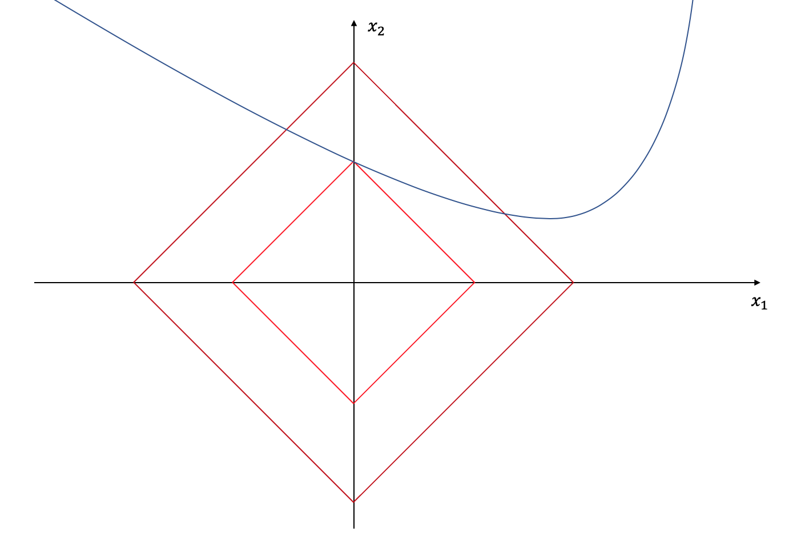

Separating the Foreground and Background of a Video
Currently, I am taking a class called "Convex Optimization for Machine Learning & Computer Vision". Even though the lectures are quite theoretical, the programming homework are not and we do some interesting projects like this one: How would you separate the background and the foreground of a video using optimization?

Most likely, you would somehow make the assumption that the background takes most of the space and stays still while the foreground are all the smaller parts that are moving. But how would we describe that mathematically and how would we "implement" this assumption? That's what we gonna cover in this blog post.
Basic Idea
We are given a video and we want to separate the background \(A\) from the foreground \(B\). We can think of each original frame as a matrix in \(\mathbb{R}^{w \times h}\). In order to work with the data, we vectorize each frame and then stack everything together to form a matrix \(Z \in \mathbb{R}^{n_1 \times n_2}\) that contains the whole video at once where \(n_1 = w \cdot h\) and \(n_2\) are the number of frames. Thus, we try to find the background matrix \(A \in \mathbb{R}^{n_1 \times n_2}\) and the foreground matrix \(B \in \mathbb{R}^{n_1 \times n_2}\) such that \(Z = A + B\).
Let's suppose we have a function \(f_\mathrm{change}\) that measures how much a matrix (i.e. the video) "changes" and we have a second function \(f_\mathrm{size}\) that measures how many non-zero elements a matrix has (i.e. how much "space" an animation might take in comparison to the whole video). Then, we can formulate following constrained optimization problem:
\[\arg\min_{A, B} f_\mathrm{change}(A) + \lambda f_\mathrm{size}(B) \ \text{s.t.} \ A + B = Z\]The \(\lambda \in \mathbb{R}\) sort of weights how much emphasis we want to put into the two objectives. As it turns out, it also makes sense to weaken our constraint a bit. Instead of reconstructing the exact image we could also reconstruct a similar image \(M\) such that the difference between the two images are below a certain threshold \(\epsilon\)
\[\arg\min_{A, B, M} f_\mathrm{change}(A) + \lambda f_\mathrm{size}(B) \ \text{s.t.} \ A+B=M \ \text{and} \ \lVert M - Z\rVert_{\mathrm{fro}} \le \epsilon\]Before we take a closer look at the two mysterious functions \(f_\mathrm{change}\) and \(f_\mathrm{size}\) we transform the constrained optimization problem into an unconstrained one using the indicator function \(\delta\) that is 0 if the argument is true and \(+\infty\) otherwise. This enables us to use methods from convex optimization.
\[\arg\min_{A, B, M} f_\mathrm{change}(A) + \lambda f_\mathrm{size}(B) + \delta\{A+B-M=0\} + \delta\{\lVert M - Z\rVert_{\mathrm{fro}} \le \epsilon\}\]Vector \(p\)-Norm
Most of the norms you usually encounter are vector \(p\)-norms. For \(p \ge 1\) they are defined like this
\[\lVert x \rVert_p = \left( \sum^n_{i=1} \|x_i\|^p \right)^{1/p}\]For example, if you take \(p=2\) you get the Euclidean norm that can measure the "direct" distance between two vectors. Or, you take \(p=1\) and you get the Manhattan norm that can measure the distance when you are only allowed to move on a grid (like it is in Manhattan).
For any \(p \ge 1\) we have a true norm and any norm turns out to be convex. Proof: Let \(x, y \in \mathrm{E}\) and \(0 \le \alpha \le 1\). A function \(F\) is convex iff \(F(\alpha x + (1-\alpha) y) \le \alpha F(x) + (1-\alpha) F(y)\).
\[\begin{aligned} \lVert \cdot \rVert(\alpha x + (1 - \alpha) y) &\le \lVert \cdot \rVert(\alpha x) + \lVert \cdot \rVert((1 - \alpha) y) \\ &= \alpha \lVert \cdot \rVert(x) + (1-\alpha) \lVert \cdot \rVert(y) \end{aligned}\]However, for \(0 < p < 1\) the \(p\)-norm is not a norm but a Quasinorm and therefore, the function is not necessarily convex anymore. You can also see in the visualization that the epigraph (the level curves) are not a convex set.
Notice how the edges at the axes become sharper and sharper. Taking \(p=0\) breaks the original \(p\)-norm formula (whats the 0-th root of a number?) so people agreed to define the 0-norm as the number of non-zero elements in a vector
\[\lVert x \rVert_0 = |\{ x_i \ \colon \ x_i \ne 0 \}|\]The 0-norm looks like a suitable candidate for our \(f_\mathrm{size}\) function. We assume that the foreground takes only a small part of the video, i.e. each frame will have many zero elements in it and our foreground matrix \(B\) will be sparse. Thus, we want to minimize \(B\) over the 0-norm. Sadly, the 0-norm is not only non-convex but also too hard to optimize. We do know how to optimize over convex functions so we need to find a suitable convex alternative to the 0-norm that behaves not the same but close enough.
Let's suppose we are in \(R^2\) only. The blue line below shows all optimal \((x_1, x_2)\)-pair solutions for any given problem. So which solution should we pick? Clearly there are infinite many. We could make the additional requirement to make the solution as sparse as possible, i.e. either \(x_1\) or \(x_2\) should be zero. It should be obvious that the solution will be the intersection of the blue line with the \(x_1\)- or \(x_2\)-axis. But how would we get the intersection? Instead of optimizing over the original energy function (the blue line) only, we will also optimize over the 1-norm (red line), i.e. we will make the area of the red square as small as possible such that the red edges still hit any part of the blue line.

Because the 1-norm has "edges" at the axes, it is likely that we end up with a sparse solution. This is also known as "l1-norm regularization" and you can read a nice blog post here that explains this trick more in detail. For \(p > 1\) we lose the edges at the axes and for \(p < 1\) our "norm" wouldn't be convex anymore, so the 1-norm seems to be a reasonable candidate for enforcing sparsity on the video matrix \(B\).
One tiny part is missing: \(B\) is a matrix and the 1-norm is defined for vectors. Thus, we need to vectorize \(B\) first before we apply the 1-norm. There is sometimes an abuse of notation, and the 1-norm of a matrix refers to
\[\lVert B \rVert_1 = \lVert\operatorname{vec} B\rVert_1\]Matrix Schatten \(p\)-Norm
There are several ways to define a matrix norm and things can become confusing. One way is by vectorizing the matrix and actually referring to a vector norm like it was the case above. A general formula would be
\[\lVert A \rVert_p = \left( \sum_{i=1}^m \sum_{j=1}^n \| a_{ij} \|^p \right)^{1/p} = \lVert \operatorname{vec} A \rVert_p\]One famous special case \(p=2\) is the Frobenius norm \(\lVert \cdot \rVert_\mathrm{fro}\) that matches the definition of the Euclidean norm.
Sometimes, a matrix norm refers to the operator norm which "measure the 'size' of certain linear operators". Let \(A\) be a linear mapping from \(K^m\) to \(K^n\). Then we could define \(\lVert A \rVert_p\) as
\[\lVert A \rVert_p = \sup_{x \ne 0} \frac{\lVert Ax \rVert_p}{\lVert x \rVert_p}\]Or, we could apply a Singular value decomposition (SVD) on \(A\) and then define a norm using the singular values \(\sigma_1, \ldots, \sigma_r\). That is the idea of the Schatten \(p\)-norm and that is what we gonna look more in detail now.
\[\lVert A \rVert_p = \left( \sum_{i=1}^r \sigma_i^p \right)^{1/p}\]To understand the SVD we first need to understand the rank of a matrix. mathematically, it tells you how many rows (or columns) are linearly independent, but I like to think of it as "how interesting" your matrix is. Suppose you take \(n\) measurements and your data is \(d\) dimensional. Then, you could represent your data as an \(n \times d\) matrix. Now, if your measurements are all similar or you could find some simple (linear) "rule" that can explain all rows (or columns) your matrix has, then the matrix is probably low rank and you could throw away a lot of unnecessary data. In contranst, if it turns out that each measurement has some interesting information which is not present in the other measurements, then you better keep it in order not to lose information. In some sense, the rank also indicates, how much you could compress your data without losing meaningful insights.
One technique to come up with "rules" that explain your data in a more compressed way is to calculate the singular value decomposition.
\[A = U \Sigma V^T\]where \(U\) and \(V\) are orthogonal matrices (\(U^TU = UU^T = I\)) and \(\Sigma\) is a diagonal matrix consisting of \(r = \operatorname{rank} A\) singular values \(\sigma_1 \ge \cdots \ge \sigma_r\) unequal to 0 and \(\sigma_{r+1} = \cdots = \sigma_n\) equal to zero. \(U\) consists of the necessary \(r\) orthonormal bases and \(\Sigma\) tells you how much you have to scale them to reconstruct entries in \(A\).
The higher a specific singluar value is, the more important it is to explain the data. For example, if your data follows a linear trend in \(\mathbb{R}^2\), then you will end up with a very high first singular value and a quite small second singular value. And if you can explain your data perfectly using a simple line, then the second singular value will be zero and your rank is 1 because
\[\operatorname{rank} A = | \{ \sigma_i \ \colon \ \sigma_i \ne 0, A = U \Sigma V^T \} | = |\{ \sigma_1 \}| = 1\]Now, remember that the Schatten \(p\)-norm is defined over the singular values for \(1 \le p \le +\infty\). Interestingly enough, taking \(p = 2\) also yields the Frobenius norm.
Setting \(p=0\) will not give us a real norm as it was the case with the vector 0-norm and it won't be convex anymore but it turns out that it counts the non-zero elements of your singular values. Do you see the similarity between the vector 0-norm and matrix Schatten 0-norm?
\[\lVert A \rVert_0 = |\{ \sigma_i \ \colon \ \sigma_i \ne 0 \}| = \operatorname{rank} A\]Going back to our video separation problem, we assumed that the background of the video does not change and is probably the same frame for the whole video, i.e. all columns of \(A\) (frames) should be more or less the same image vector. If we can minimize the rank of \(A\) we would archive this. But again, the rank is not convex and we need to find a convex substitute.
Like we did in the previous section, we will replace the Schatten 0-norm with the Schatten 1-norm, which is also known as the nuclear norm. This is a good approximation to the rank that we can work with.
\[\lVert A \rVert_\mathrm{nuc} = \sum_i^r \sigma_i\]So, our final optimization problem looks like this
\[\arg\min_{A, B, M} \lVert A \rVert_\mathrm{nuc} + \lambda \lVert B \rVert_1 + \delta\{A+B-M=0\} + \delta\{\lVert M - Z\rVert_{\mathrm{fro}} \le \epsilon\}\]Notice that none of the terms are differentiable, so simple gradient descent or forward backward splitting does not work here.
Alternating Direction Method of Multipliers (ADMM)
Instead, we use ADMM. For now, I won't go into details how to derive these update rules but the idea is to introduce a Lagrangian Multiplier \(Y\) to enforce \(A+B=M\) and optimize over \(A\), \(B\), \(M\) and finally \(Y\) in an alternating way. Each optimization problem can be reformulated using the \(\operatorname{prox}\) operator and the \(\operatorname{prox}\) of the Nuclear norm, the L1 norm and the indicator function are well known. Please have a look at the Python code to see the update iteration. We reformulate the problem as the Augmented Lagrangian.
\[\begin{aligned} \min_{A, B, M} \max_{Y} \mathcal{L}(A, B, M; Y) = &\lVert A \rVert_\mathrm{nuc} + \lVert B \rVert_1 + \delta\{\lVert M - Z\rVert_{\mathrm{fro}} \le \epsilon\} \\ &+ \langle A+B-M, Y \rangle + \frac{\rho}{2} \lVert A+B^k-M^k \rVert_\mathrm{fro}^2 \end{aligned}\]Optimization over A: Low Rank Matrix
\[\begin{aligned} A^{k+1} &\in \arg\min_{A} \lVert A \rVert_\mathrm{nuc} + \langle Y^k, A \rangle + \frac{\rho}{2} \lVert A+B^k-M^k \rVert_\mathrm{fro}^2 \\ &= \arg\min_{A} \lVert A \rVert_\mathrm{nuc} + \frac{\rho}{2} ( 2 \langle \tfrac{1}{\rho} Y^k, A \rangle + \langle A+B^k-M^k, A+B^k-M^k \rangle ) \\ &= \arg\min_{A} \lVert A \rVert_\mathrm{nuc} + \frac{\rho}{2} \langle A+B-M^k+\tfrac{1}{\rho}Y^k, A+B-M^k+\tfrac{1}{\rho}Y^k \rangle \\ &= \arg\min_{A} \lVert A \rVert_\mathrm{nuc} + \frac{\rho}{2} \lVert A - (M^k - B^k - \tfrac{1}{\rho} Y^k) \rVert_\mathrm{fro}^2 \\ &= \operatorname{prox}_{\lVert \cdot \rVert_\mathrm{nuc} / \rho}(\underbrace{M^k - B^k - \tfrac{1}{\rho} Y^k}_X ) \\ &= U \operatorname{diag} ( \{ (\sigma_i - \tfrac{1}{\rho})_+ \} ) V^T \ \text{where} \ X = U \Sigma V^T \end{aligned}\]Optimization over B: Sparse Matrix
\[\begin{aligned} B^{k+1} &\in \arg\min_{B} \lambda \lVert B \rVert_1 + \langle Y^k, B \rangle + \frac{\rho}{2} \lVert A^{k+1}+B-M^k \rVert_\mathrm{fro}^2 \\ &= \operatorname{prox}_{\lVert \cdot \rVert_1 \lambda / \rho} (M^k - A^{k+1} - \tfrac{1}{\rho} Y^k) \\ \operatorname{vec} B^{k+1} &= \operatorname{prox}_{\lVert \operatorname{vec}(\cdot) \rVert_1 \lambda / \rho} ( \underbrace{\operatorname{vec} (M^k - A^{k+1} - \tfrac{1}{\rho} Y^k)}_{x}) \\ &= b \in \mathbb{R}^{n_1 n_2} \ \colon \ b_i = \begin{cases} x_i + \tfrac{\lambda}{\rho} &\text{if } x_i < -\tfrac{\lambda}{\rho} \\ 0 &\text{if } x_i \in [ -\tfrac{\lambda}{\rho}, \tfrac{\lambda}{\rho} ] \\ x_i - \tfrac{\lambda}{\rho} &\text{if } x_i > \tfrac{\lambda}{\rho} \end{cases} \end{aligned}\]Optimization over M: Reconstruction
\[\begin{aligned} M^{k+1} &\in \arg\min_M \delta \{ \lVert M - Z \rVert_\mathrm{fro} \le \epsilon \} - \langle Y^k, M \rangle + \frac{\rho}{2} \lVert A^{k+1} + B^{k+1} - M\rVert_\mathrm{fro}^2 \\ &= \operatorname{prox}_{\delta \{ \lVert M - Z \rVert_\mathrm{fro} \le \epsilon \} / \rho } (\underbrace{A^{k+1} + B^{k+1} + \tfrac{1}{\rho} Y^k}_X) \\ &= \operatorname{proj}_{C} (X) \ \text{and} \ C=\{M \in \mathbb{R}^{n_1 \times n_2} \ \colon \ \lVert M - Z \rVert_\mathrm{fro} \le \epsilon\} \\ \operatorname{vec} M^{k+1} &= \operatorname{proj}_{C'} (\operatorname{vec} X) \ \text{and} \ C'= \{ m \in \mathbb{R}^{n_1 n_2} \ \colon \ \lVert m - \operatorname{vec}Z \rVert_2 \le \epsilon\} = \overline{B}(\operatorname{vec}{Z}, \epsilon)\\ &= \operatorname{vec}Z + \frac{\epsilon}{\max\{ \lVert \operatorname{vec}X - \operatorname{vec}Z \rVert_2, \epsilon \}} (\operatorname{vec} X - \operatorname{vec} Z) \end{aligned}\]Dual Ascend Step for Y
In ADMM, we perform a gradient ascend step for the dual variable \(Y\) to enforce the equality constraint:
\[Y^{k+1} = Y^k + \rho * (A^{k+1} + B^{k+1} - M^{k+1})\]Implementation using Numpy
Update Rules
def calcA(B, M, Y, rho):
X = M - B - (1/rho)*Y
n1, n2 = X.shape
U, S, VH = np.linalg.svd(X, full_matrices=False)
diag_plus = np.diag(np.maximum(np.zeros(S.shape), S - 1/rho))
A = U @ diag_plus @ VH
return A
def calcB(A, M, Y, rho, lamb):
X = M - A - (1/rho)*Y
x = mat2vec(X)
lamb_rho = lamb / rho
b = x
b[np.where(b < -lamb_rho)] += lamb_rho
b[np.where(b > lamb_rho)] -= lamb_rho
B = vec2mat(b, X.shape)
return B
def calcM(A, B, Y, Z, rho, eps):
X = A + B + (1/rho)*Y
x = mat2vec(X)
z = mat2vec(Z)
m = z + eps / (np.maximum(np.linalg.norm(x-z), eps)) * (x-z)
M = vec2mat(m, X.shape)
return M
def calcY(A, B, M, Y, rho):
Y = Y + rho * (A + B - M)
return Y
def calcEnergy(A, B, M, Y, rho, lamb):
A_nuc = np.linalg.norm(A, ord='nuc')
B_1 = lamb*np.linalg.norm(mat2vec(B), ord=1)
inner = np.trace(Y.T.dot(A+B-M))
fro = rho/2 * np.linalg.norm(A+B-M)
energy = A_nuc + B_1 + inner + fro
return energy
Update Iteration
for it in range(max_it+1):
# update A:
A = calcA(B, M, Y, rho)
# update B:
B = calcB(A, M, Y, rho, lamb)
# update M:
M = calcM(A, B, Y, Z, rho, eps)
# update Y:
Y = calcY(A, B, M, Y, rho)
# update augmented lagrangian energies
energy = calcEnergy(A, B, M, Y, rho, lamb)
energies.append(energy)
# output status
print("Iteration:", it, "/", max_it, ", Energy:", energy)